Глэмпинг
Палатки, летние домики, костер и простые удобства

Создаем экодеревню, где можно перезагрузиться, отдохнуть от шума и присоединиться к перерождению этого места Сделай первый шаг к несбывшейся мечте
Беларусь, в которую можно приехать
Палатки, летние домики, костер и простые удобства

Можно приехать, помочь руками и стать частью возрождения места

Хутор окружен лесом с 4-х сторон — березовым, сосновым и дубовым

Рубите дрова, разжигайте костер, соберите яйца и получайте награды
Для тех, кто мечтает сбежать из города

Если новости, работа и постоянное давление забрали силы — здесь можно выдохнуть и замедлиться

Если вы мечтаете о жизни за городом, но не готовы всё бросить — попробуйте здесь

Если вам не хватает дома — здесь вас ждёт Беларусь, в которую можно приехать

Если терапии недостаточно и нужно место, чтобы выдохнуть, природа и работа руками могут помочь
Многие беларусы после тюрьмы, репрессий, войны и вынужденной эмиграции живут в состоянии тревоги, усталости и выгорания
MROJA — место силы и восстановления для тех, кому это особенно нужно

Расчистить территорию, убрать мусор, выровнять землю, засеять травой

Вода, канализация, электричество и базовые условия

Палаточная зона, летние домики, баня и удобства для гостей и волонтёров

Укрепить конструкцию, стены, крышу и внутреннее пространство

Отдельная постройка с душевыми, туалетами и хозяйственным блоком

Расширение инфраструктуры, ретриты, приложение с квестами

Мы — пара беларусов, вынужденных уехать из своей страны. Сергей Гунь был политзаключённым, Наталья Тюлюпова также находилась на родине под политическими преследованиями.
Мы купили заброшенный хутор в лесу на Подляшье. Старый дом проще было бы снести, но мы хотим сохранить его характер и вернуть этому месту жизнь.
Сергей работает с деревом, строит и восстанавливает дома. В Беларуси у него был курятник на 600+ кур, а за его плечами — более 10 старых домов, которым он помог вернуться к жизни. Наталья запускает проекты, выстраивает коммуникацию, собирает людей вокруг идеи и превращает хаос в понятную систему.
Мы мечтаем построить экодеревню — место силы, куда смогут приезжать люди из разных стран: отдохнуть, поработать руками, пожить ближе к природе и прикоснуться к живой беларусской культуре.
Чтобы хутор быстрее ожил, нам нужна поддержка. Даже 1 eur поможет создать место, куда люди смогут приехать за тишиной, передышкой и человеческим теплом.
© Copyright 2026